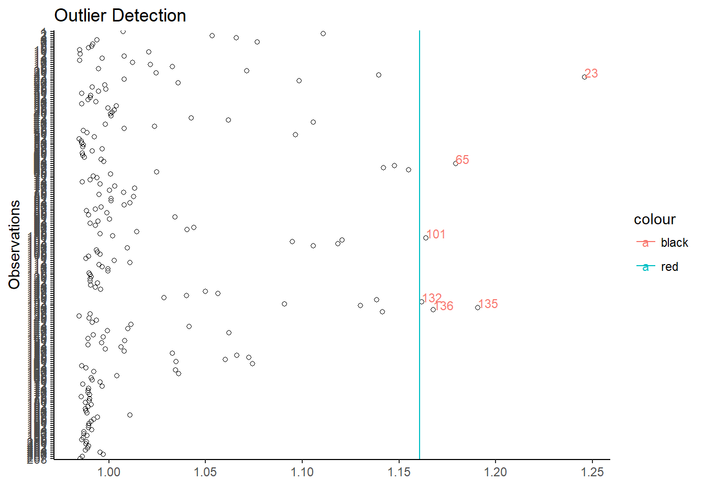
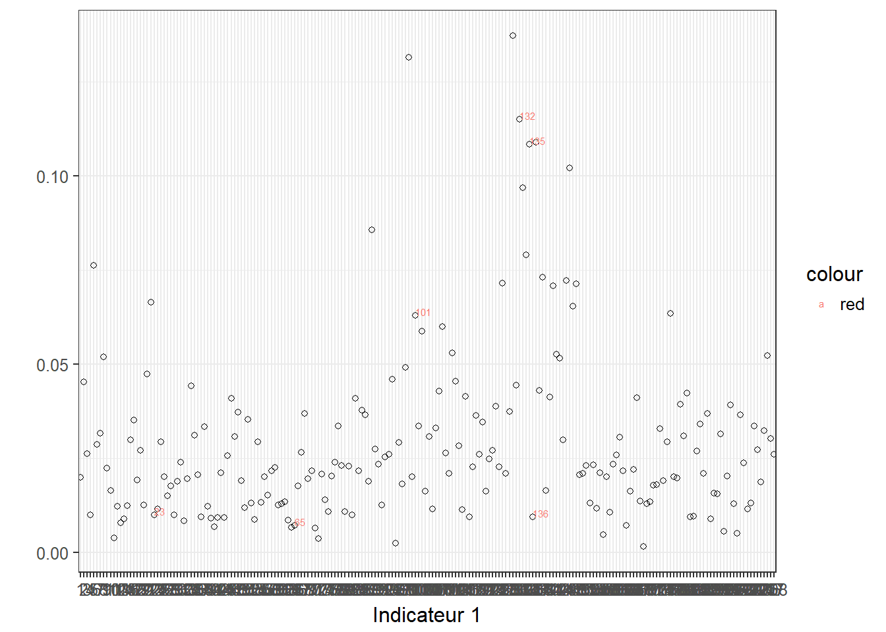
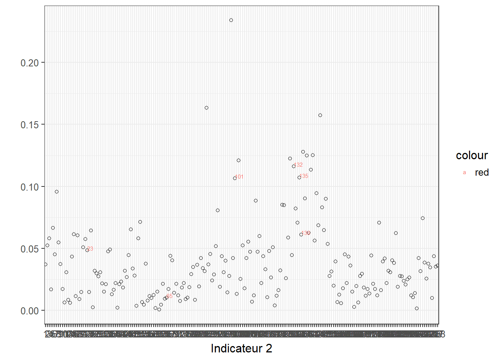
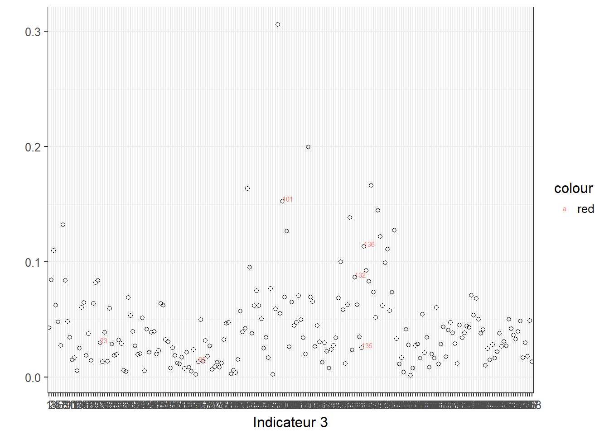

Détection d’anomalies
Informations
Il s’agit d’un extrait de la formation. Cette formation peut se faire en présentiel ou à distance. Pour en savoir plus, merci de me contacter.
1 Introduction
On peut détecter statistiquement des cas qui sortent de l’ordinaire, ensuite les gestionnaires pourront approfondir l’analyse pour savoir les raisons pour lesquelles on a ces anomalies.
Dans certains cas, il peut s’agir d’anomalies techniques, parfois, on peut révéler des comportements atypiques.
Si la détection d’une variable est plutôt facile, la détection multivariée nécessite un algorithme robuste.
2 Détection des abbérations
2.1 Valeurs abberantes


2.2 Visualisation interactive
Afin de mieux exploiter les résultats, on peut créer une visualisation interactive.
2.3 Visualisation par variable
2.3.1 Indicateur 1

2.3.2 Indicateur 2

2.3.3 Indicateur 3
